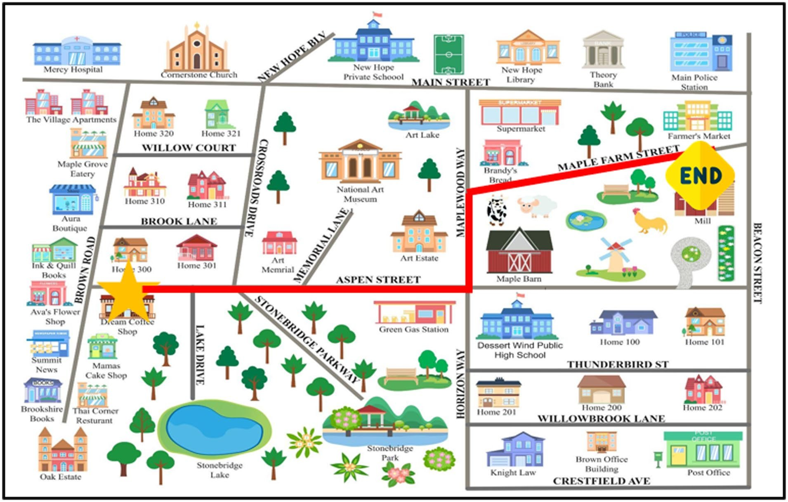
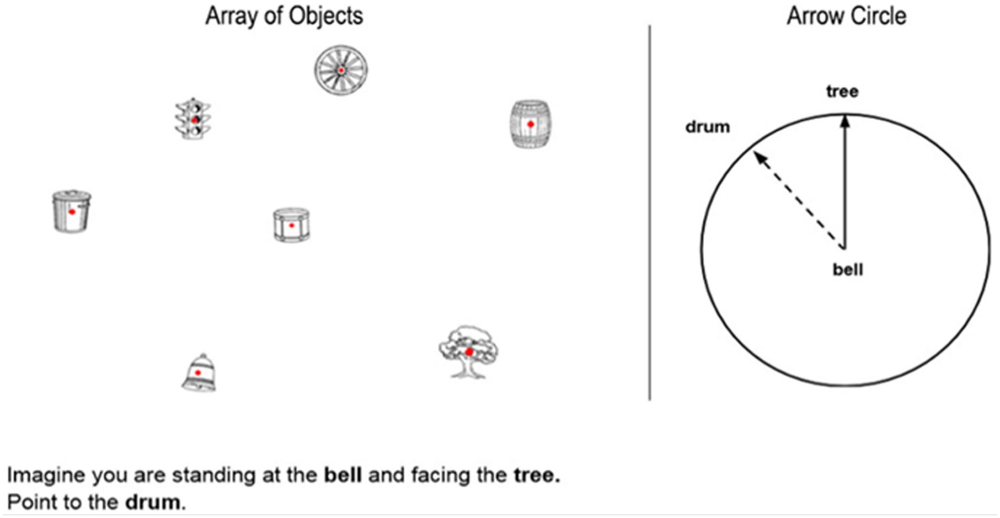
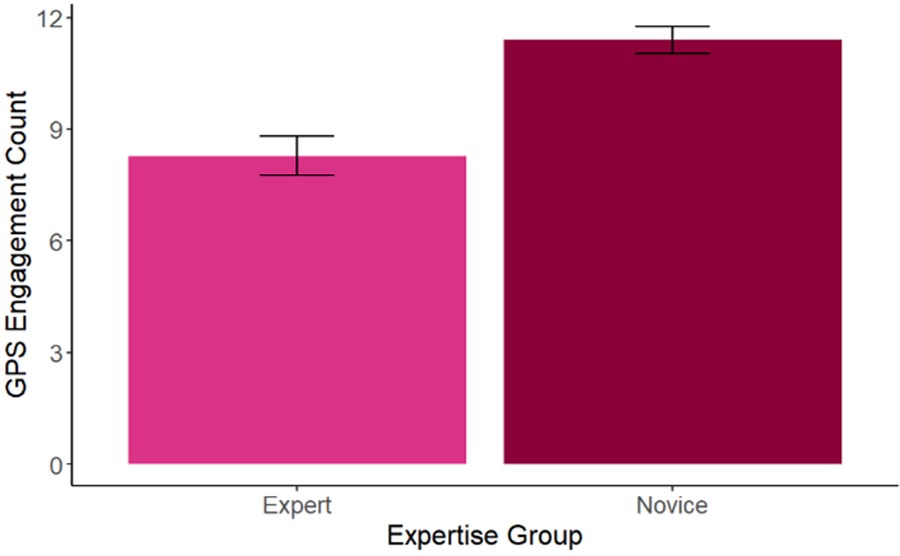
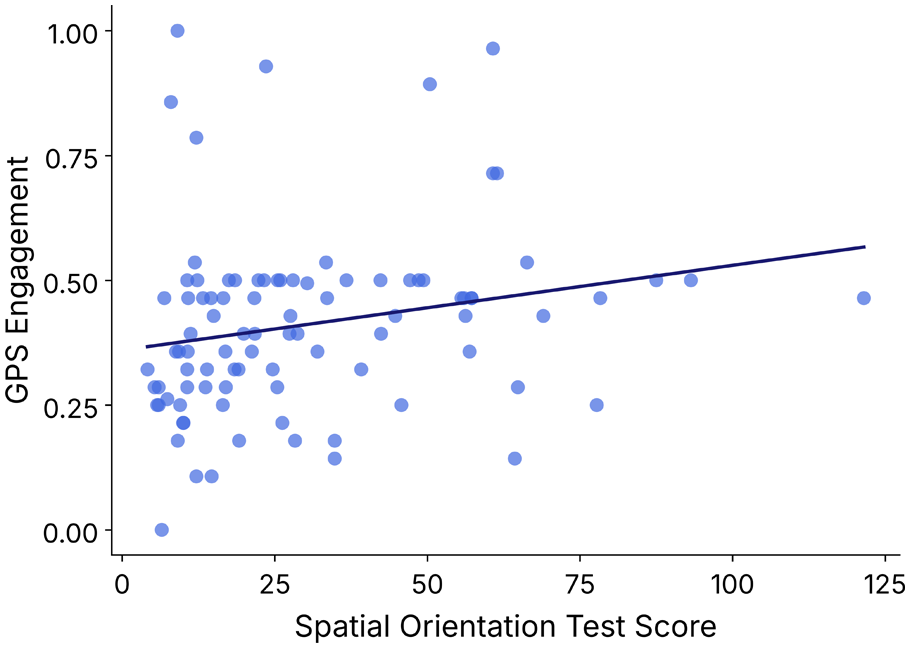

Expertise & GPS Automation
CHAT Lab · Human Factors and Applied Cognition, NC State University
When people get to choose whether to use automation, do they choose well?
The why
Automation is now part of everyday life, from smart home devices and digital assistants to the navigation app on your phone. These tools are meant to reduce workload and make tasks easier, but whether they actually help depends on how people use them.
We know that trust, workload, system reliability, self-confidence, and how hard a task feels all shape automation use. Those factors still don't fully explain why two people facing the same task with the same tool make different choices about using it. Expertise may be part of the answer, since what someone already knows changes how much help they need.
Most research on expertise and automation comes from high-stakes fields like aviation and medicine, where experts are defined by formal training. Everyday tools work differently. GPS is used by people with every level of experience, often with no training at all, so these tools have to support novices and experts at the same time. We wanted to know how people's own knowledge shapes their decision to turn the automation on.
What we did
Ninety-one undergraduate students learned the layout of an imaginary town. They studied a map for one minute, studied it again with key locations highlighted, practiced with ten questions while the map was visible, and then answered fifteen questions from memory, like "What street is the bakery on?" Accuracy on those fifteen questions measured their navigational expertise for that town, and we split participants at the median into experts and novices. Experts averaged 83% correct and novices 68%.
Participants then completed seven navigation trials on the same map, giving a route between two locations. Before each trial, they chose one of three options: no GPS, a quick look at the GPS route before navigating on their own, or the GPS route for the whole trial. After each trial they rated how well they thought they did. The whole procedure was then repeated with a second map, for fourteen trials in total.

We also measured spatial ability with a computer-based Spatial Orientation Test. Participants imagined standing at one object facing another and pointed to a third, and we scored the average angle of their error, where lower scores mean better spatial orientation.

What we found
Experts used the GPS less
As we predicted, experts turned on the GPS significantly less often than novices. On average, novices used it on about 11 of the 14 trials, and experts on about 8.

Both groups navigated about equally well
Even though novices relied on the GPS more, the two groups' navigation accuracy wasn't significantly different (85% for experts and 80% for novices). The novices' extra GPS use seems to have made up for what they didn't know about the town. Rather than over-relying on the tool, they used it about as much as they needed to.
Spatial ability played a role
In follow-up analyses, people with weaker spatial orientation used the GPS more often, and they also tended to score a little lower on navigational expertise. This suggests our expert and novice groups reflected broader spatial skills, not just how well people memorized one map.

Confidence didn't predict GPS use
We also expected that more confident participants would use the GPS less, but confidence wasn't related to GPS use, expertise, or spatial ability. This is likely because we asked about confidence after each trial, so it captured how people felt about their performance rather than how confident they felt when deciding whether to use the GPS.
Why it matters
Automation use is often treated as a simple yes-or-no choice, which makes it hard to tell blind reliance apart from strategic, deliberate use. Giving people the choice on every trial showed that their decisions weren't random. People used the GPS in ways that matched their own abilities, and their accuracy reflected it.
This matters for consumer technology like GPS apps and conversational AI tools such as ChatGPT and Copilot, where users vary widely in what they already know. Unlike professional systems built for trained operators, these tools have to work both for novices who might misuse them and for experts who might not use them enough. Designing automation that people can adjust to their own needs is one way to support both.
These results come from map-specific expertise and university students aged 18 to 24, so the next step is testing how they hold up with other ways of measuring expertise, other age groups, and real-world navigation. Future studies should also ask about confidence before each decision, not after.
My role
I was first author on this paper. I reviewed the literature on expertise, risk, and automated navigation to shape the research question and hypotheses, then designed the experimental paradigm, including the tasks, maps, and procedures. I also prepared the IRB materials and led data collection.
Read the full paper
Padilla, J. G., & Patton, C. E. (2026). Knowing when to use automation: Task-specific expertise and GPS engagement in a navigational task. Proceedings of the Human Factors and Ergonomics Society Annual Meeting, 70(1).